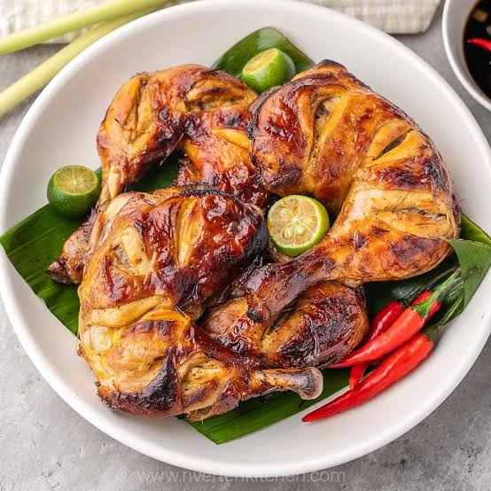

|
|
Chicken Inasal

A famous grilled chicken dish from the Visayas. Scholars and culinary observers commonly associate chicken inasal with the Western Visayas region of the Philippines, particularly the province of Iloilo and its urban centers. Local grilling traditions and market foodways in that area provided the setting where the dish took shape.
Rather than springing from a single inventor, inasal appears to have grown from everyday practices: open-fire grilling, local citrus use, and communal eating. Over time those techniques and flavor preferences coalesced into a recognizable regional specialty.
INGRIDIENTS:
Chicken pieces (such as leg quarters, thighs, wings, or breast/wing cuts) marinated in calamansi juice, vinegar, lemongrass, garlic, ginger, salt, and black pepper.
INSTRUCTIONS:
Remove from heat, and let it rest for about 3-5 mins. Serve with chicken oil, steamed rice, and choice of sauce.
1. Finely chop the lemongrass after cutting away dark, fibrous parts.
2. Mix vinegar, calamansi juice, garlic, ginger, lemongrass, sugar, salt, and pepper in a large bowl, until blended well.
3. Put the chicken quarter legs and cover bowl. Marinate for 2-4 hours in the refrigerator.
4. Over medium heat, add chicken fat in a big pan. Cook and turn until it renders oil. Remove the skin and bottoms using a spoon.
5. Turn the heat down, put annatto seeds, crushed garlic, and bay leaf. Let it cook for about 1-2 minutes, avoid seeds from burning.
6. Let oil be infused with deep orange color for an hour, after removing from heat. Strain the oil, and remove other aromatics. Set the oil aside.
7. Prepare the grill with light grease, and enough heat over hot coals.
8. Take out chicken from the fridge, and drain excess marinade. On the grill, position each chicken quarter in a single layer with skin side up.
9. Grill the chicken, and baste it regularly with the chicken oil. Make sure to turn it once or twice. Let it cook for about 30-40 mins or until the thickest part of chicken registers 160 F in a thermometer.
10. Remove from heat, and let it rest for about 3-5 mins. Serve with chicken oil, steamed rice, and choice of sauce.
|